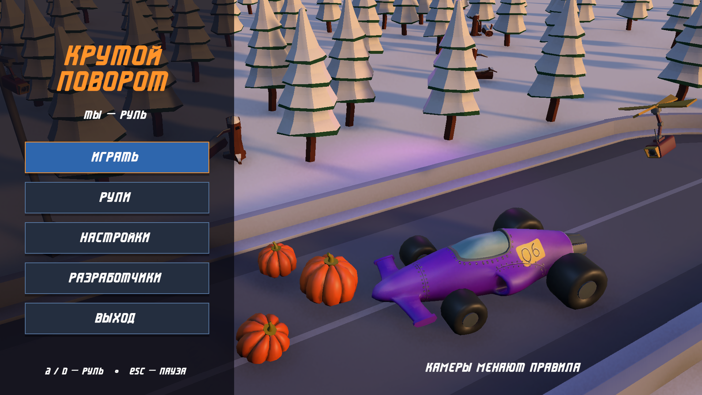
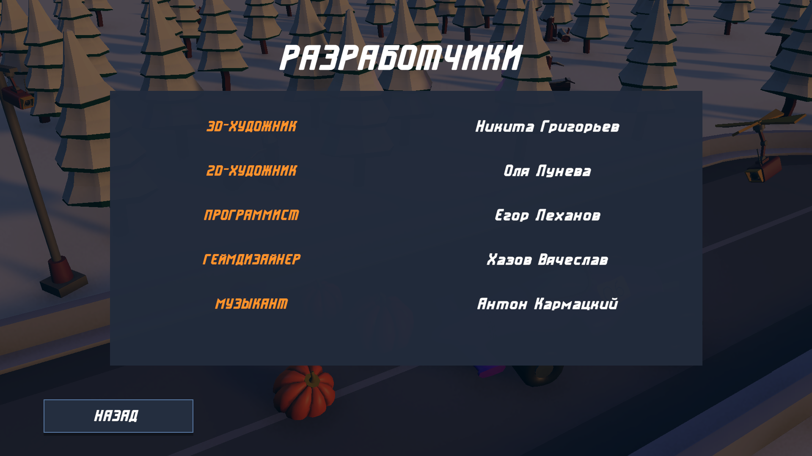
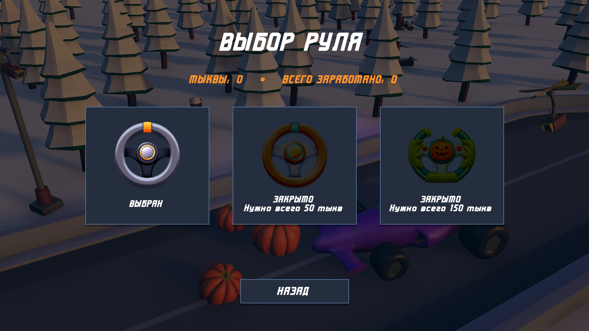
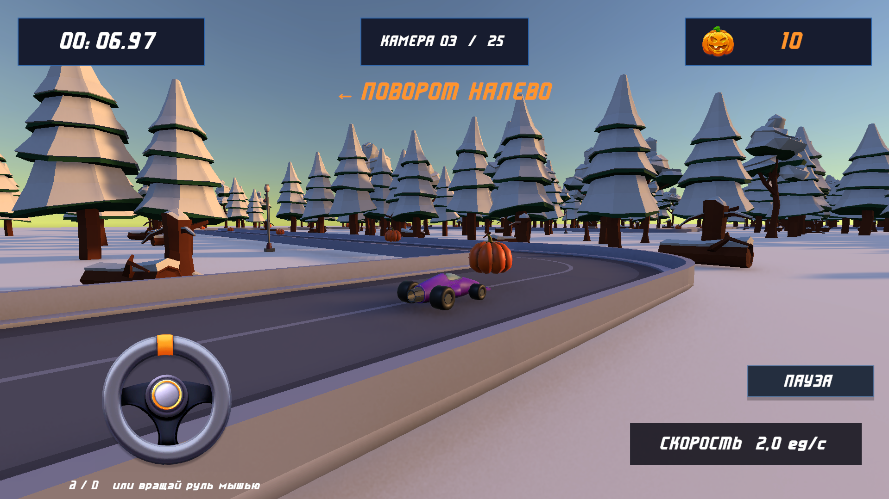

02 Скриншоты
Нажми на скриншот, чтобы увеличить.





Гоночный симулятор · команда ЗамороJAMные
Ты не пилот. Ты — руль. Машина несётся сама, камеры наблюдения переключают ракурсы, а твоя задача — вовремя и в правильную сторону крутить баранку, чтобы войти в поворот.
Веб-версия игры прямо на странице — жми «Играть» и крути руль.
«Крутой поворот» — это гоночная аркада, созданная командой ЗамороJAMные за 72 часа на Siberian Game Jam 2026. Тема джема — «Камеры наблюдения». Встроенный элемент — тыква — работает как валюта для разблокировки новых рулей и как навигатор по идеальной траектории на трассе.
Механика необычная: никакого газа и тормоза. Машина движется сама, а игрок отвечает только за вращение руля. Камеры наблюдения автоматически меняют ракурсы, поэтому нужно быстро сообразить, в какую сторону поворачивать. Тыквы вдоль трассы подсказывают траекторию и приносят очки — за них можно выбрать новый руль в меню настроек.
Автопилот ведёт авто по трассе — тебе остаётся только руль.
Наблюдательные камеры переключают ракурс — ориентируйся быстро.
Оранжевые тыквы показывают идеальную траекторию и дают очки.
За собранные тыквы разблокируй новые рули в разделе выбора.
Нажми на скриншот, чтобы увеличить.




Игра опубликована на официальной странице проекта. Нажми кнопку — откроется страница naspeh.tech, откуда можно скачать сборку или сразу запустить игру в браузере.
💡 Если нужен отдельный файл для Windows (.zip / .exe) — скинь ссылку на него, и я заменю кнопку на прямое скачивание, как у «Фермы».